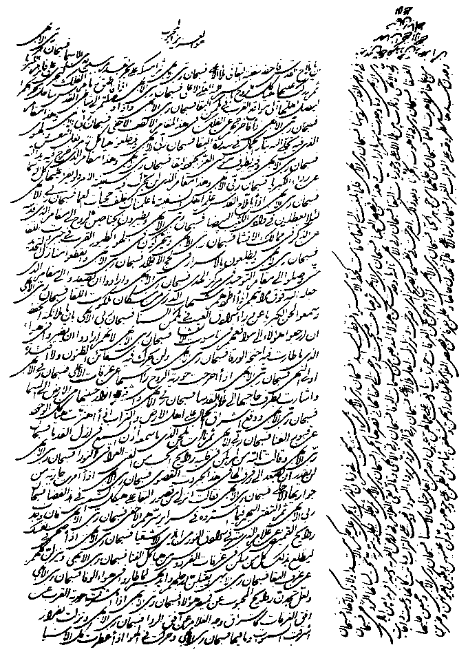

The Revelation of
Bahá'u'lláh
Adib Taherzadeh |
By the same author |
The Revelation of
Bahá'u'lláh
GR |
|
46 High Street, Kidlington, Oxford OX5 2DN © ADIB TAHERZADEH 1974
Revised edition 1975
EXTRACTS FROM THE FOLLOWING WORKS
By Bahá'u'lláh: Epistle to the Son of the Wolf, Copyright © 1953 by National Spiritual Assembly of the Bahá'ís of the United States; Gleanings from the Writings of Bahá'u'lláh, Copyright © 1952 by National Spiritual Assembly of the Bahá'ís of the United States; The Kitáb-i-Íqán, Copyright © 1950 by National Spiritual Assembly of the Bahá'ís of the United States; Prayers and Meditations by Bahá'u'lláh, Copyright © 1938 by National Spiritual Assembly of the Bahá'ís of the United States; The Seven Valleys and the Four Valleys, Copyright © 1952 by National Spiritual Assembly of the Bahá'ís of the United States. By 'Abdu'l-Bahá: Memorials of the Faithful, Copyright © 1971 by National Spiritual Assembly of the Bahá'ís of the United States. By Shoghi Effendi: The Advent of Divine Justice, Copyright © 1963 by National Spiritual Assembly of the Bahá'ís of the United State; God Passes By, Copyright © 1944 by National Spiritual Assembly of the Bahá'ís of the United States; The Promised Day Is Come, Copyright © 1961 by National Spiritual Assembly of the Bahá'ís of the United States; The World Order of Bahá'u'lláh, Copyright © 1955 by National Spiritual Assembly of the Bahá'ís of the United States. Blomfield: The Chosen Highway, Copyright 1940 by Bahá'í Publishing Trust, London. Nabíl-i-A'zam: The Dawn-Breakers, Copyright © 1932 by National Spiritual Assembly of the Bahá'ís of the United States. The Bahá'í World, vol. XII, Copyright © 1956 by National Spiritual Assembly of the Bahá'ís of the United States. ISBN 0 85398 057 8 (paper)
|

Revealed by Bahá'u'lláh in Arabic |
|
To those brilliant souls the Bahá'í Pioneers and Teachers in every land who have expended their lives and their substance in the path of Bahá'u'lláh |